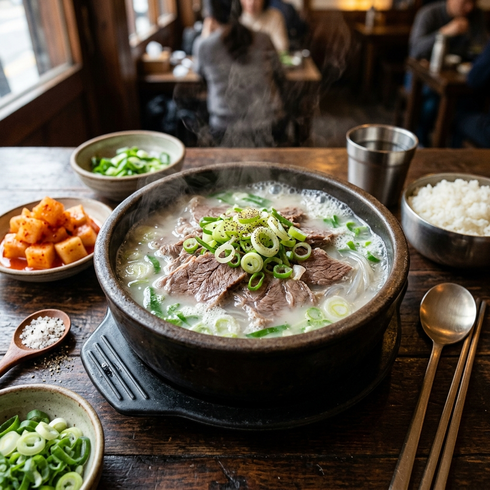
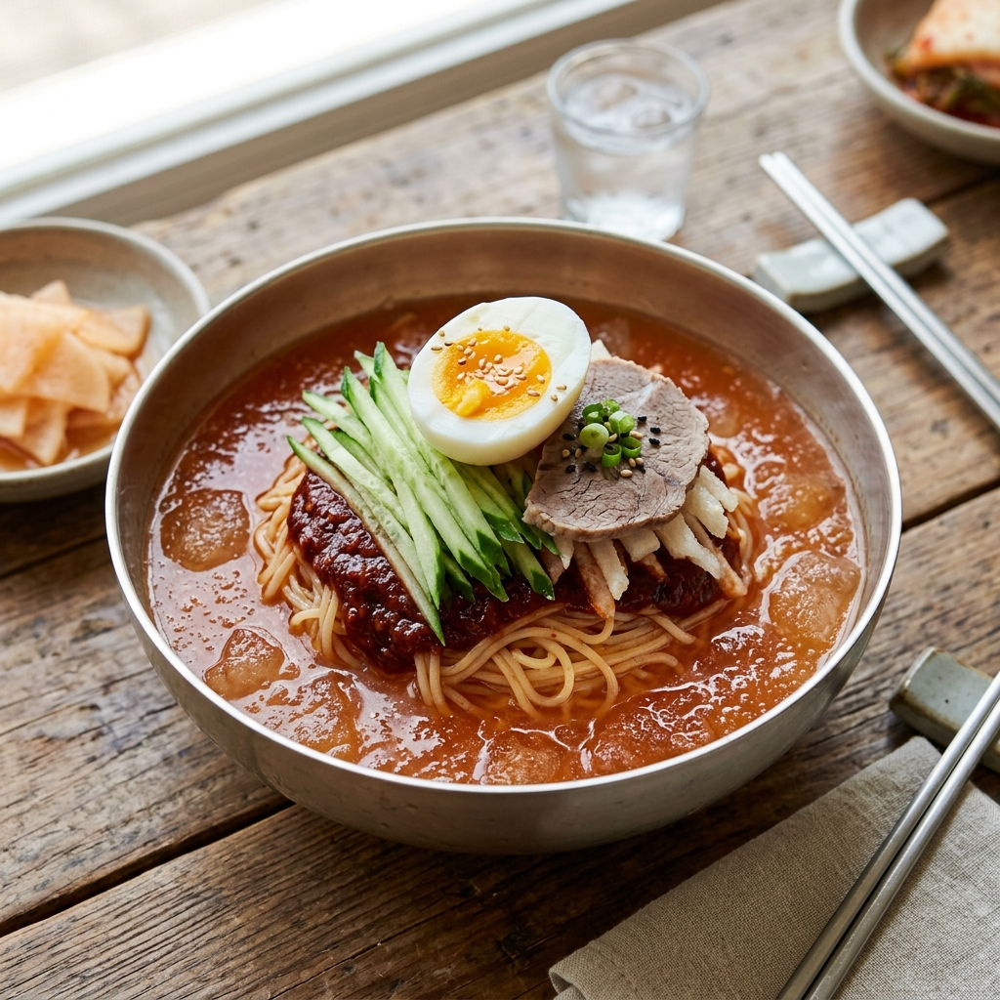
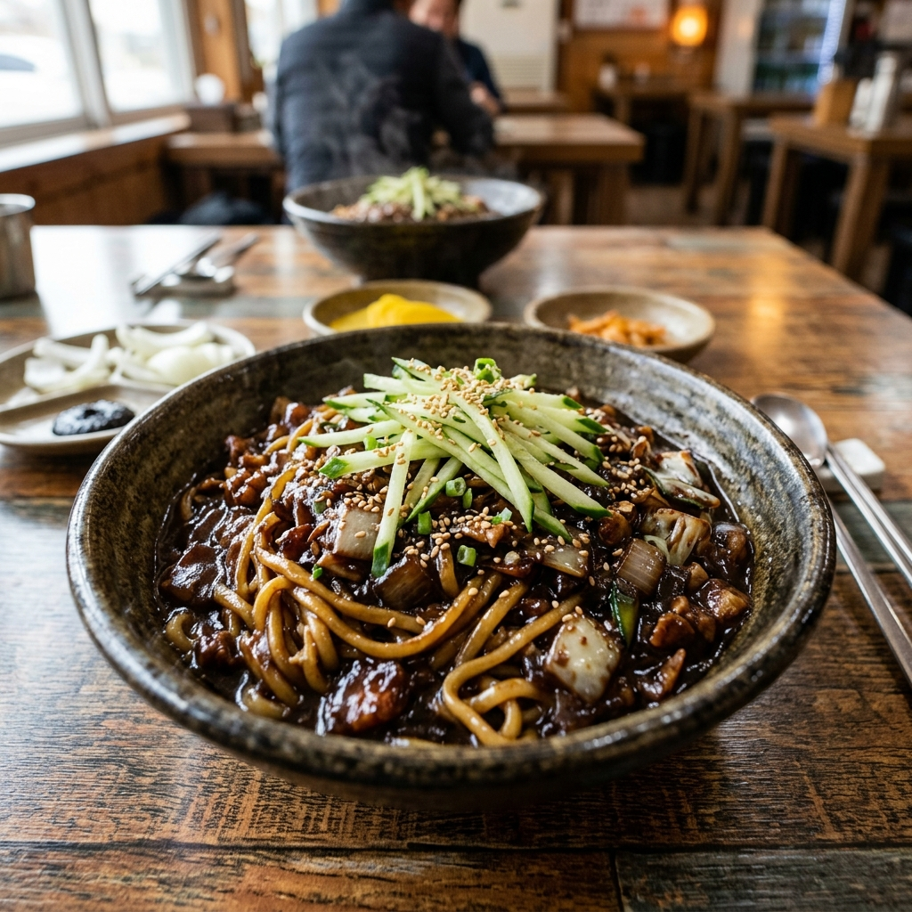
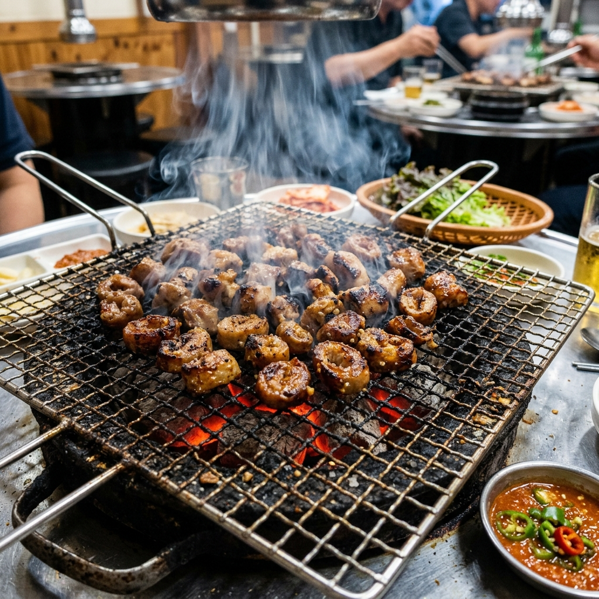
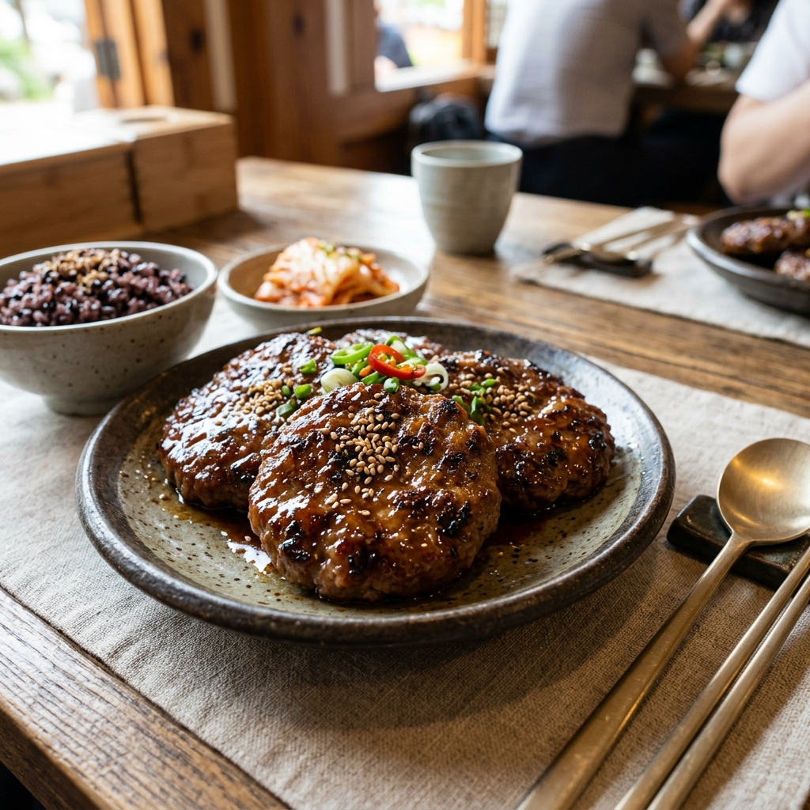
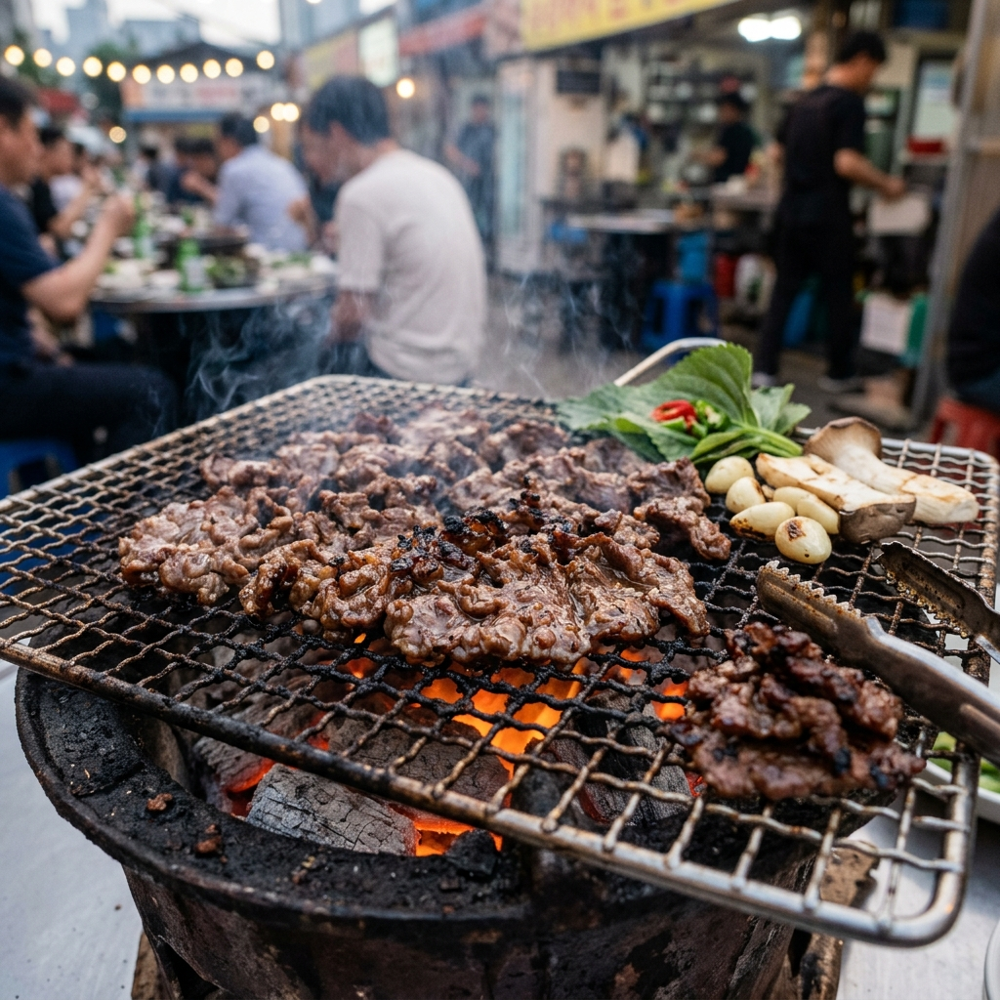
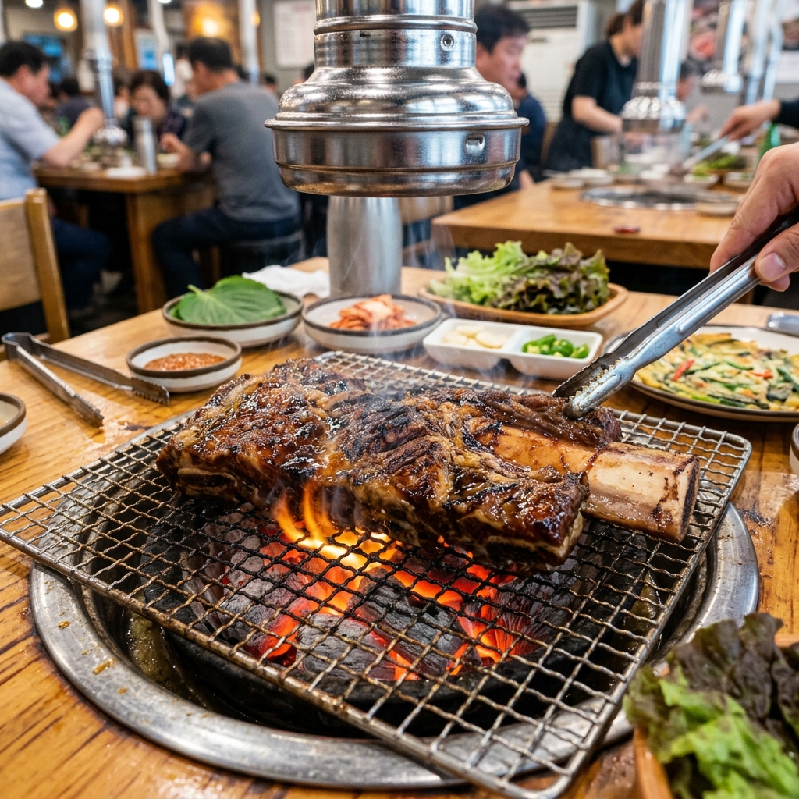
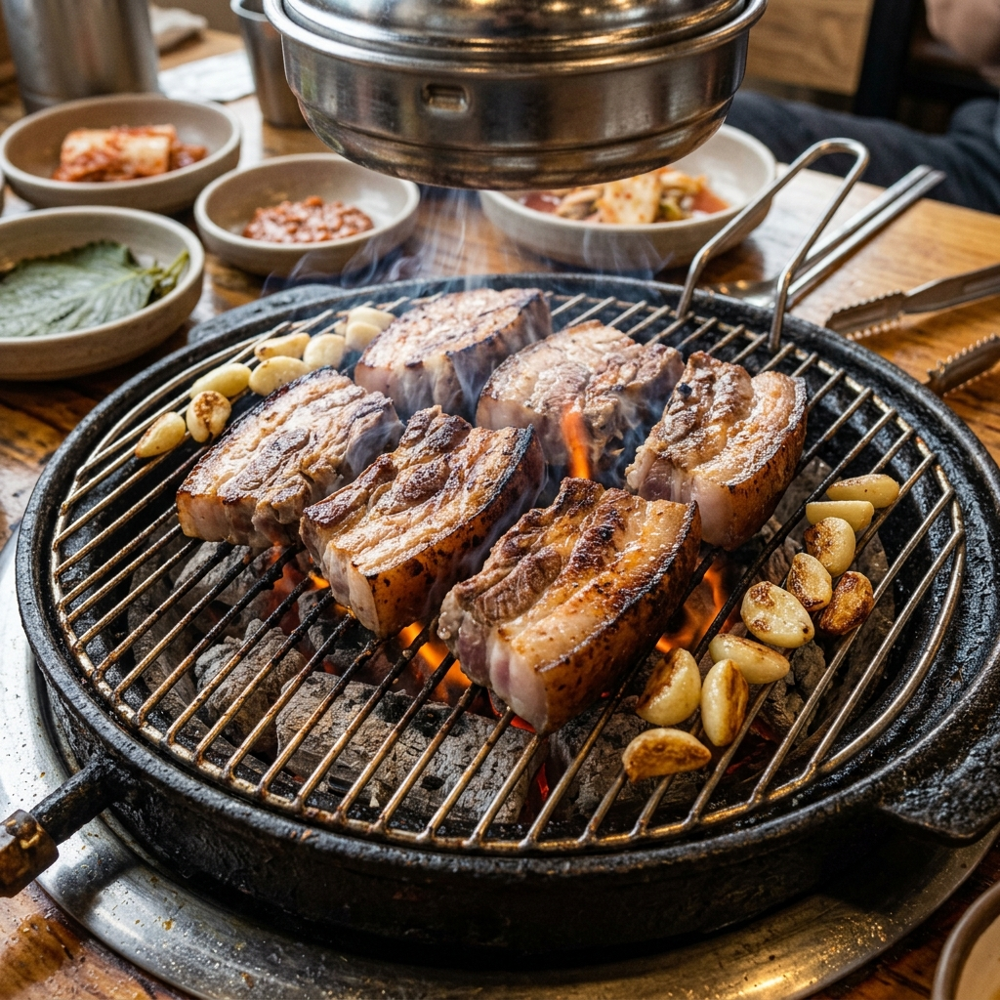
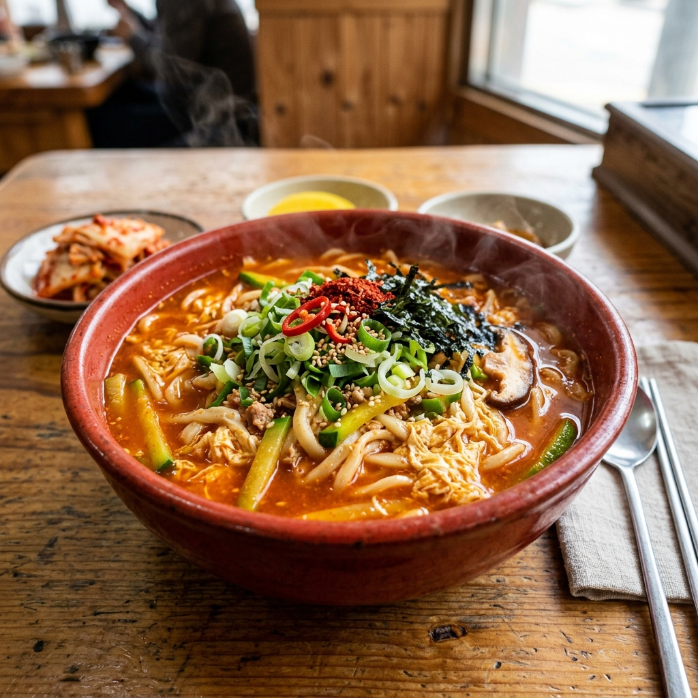

RANK 1

볼거리
경복궁, N서울타워, 롯데월드타워
먹거리
이문설농탕 (100년 전통 설렁탕 맛집)
RANK 2

볼거리
해운대 해수욕장, 감천문화마을, 광안대교
먹거리
초량밀면 (부산역 앞 밀면 맛집)
RANK 3

볼거리
송도 센트럴파크, 차이나타운, 월미도 마이랜드
먹거리
신승반점 (차이나타운 원조 유니짜장 맛집)
RANK 4

볼거리
김광석 다시그리기 길, 팔공산 케이블카, 서문시장
먹거리
구공탄막창 (대구 3대 막창구이 맛집)
RANK 5

볼거리
성심당 본점, 엑스포 과학공원, 계족산 황톳길
먹거리
오씨칼국수 (물총 칼국수 맛집)
RANK 6

볼거리
국립아시아문화전당, 무등산 서석대, 1913송정역시장
먹거리
송정떡갈비 1호점 (광주 대표 떡갈비 맛집)
RANK 7

볼거리
태화강 국가정원, 대왕암공원, 간절곶 등대
먹거리
언양기와집불고기 (전통 언양불고기 맛집)
RANK 8

볼거리
수원 화성, 방화수류정, 행리단길
먹거리
가보정 (수원 왕갈비 3대 맛집)
RANK 9

볼거리
한라산 백록담, 성산일출봉, 협재해수욕장
먹거리
칠돈가 본점 (제주 흑돼지 연탄구이 맛집)
RANK 10

볼거리
안목해변 커피거리, 경포대 해수욕장, 오죽헌
먹거리
형제칼국수 (얼큰한 장칼국수 맛집)